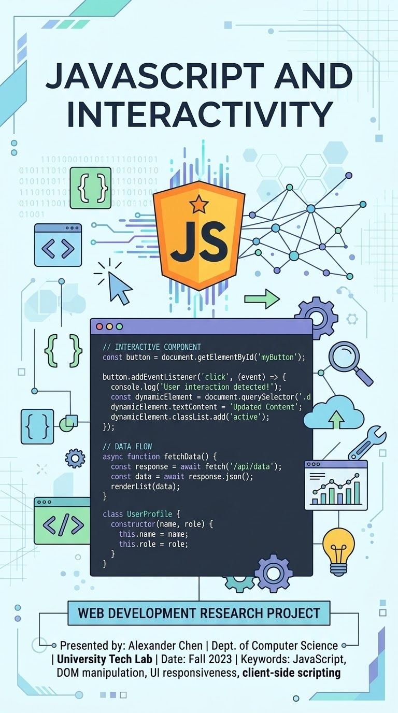

اسم الطالبة: سارة محمد محمد سلامة | الرقم الجامعي: 2501910

أصبحت مواقع الويب جزءًا أساسيًا من حياتنا اليومية، حيث نستخدمها في التعليم والتسوق والتواصل الاجتماعي. ومع تطور تكنولوجيا الإنترنت، لم تعد صفحات الويب مجرد نصوص وصور ثابتة، بل أصبحت صفحات تفاعلية تستجيب للمستخدم وتنفذ الأوامر. وتُعد لغة JavaScript من أهم لغات البرمجة المستخدمة في تطوير مواقع الويب، إذ تسمح بإضافة الحركة والتفاعل إلى الصفحات.
هي لغة برمجة يستخدمها المطورون في بناء صفحات ويب تفاعلية لتحسين تجربة المستخدم. وهي لغة برمجة نصية من طرف العميل (Client-side)، وتعتمد بشكل أساسي على نموذج كائن المستند (DOM) للتحكم في عناصر واجهة المستخدم.
تعمل من خلال ترجمة بناء الجملة إلى بايت كود بواسطة محرك JavaScript الموجود في المتصفح، لتتفاعل مع الأحداث المختلفة (مثل النقر أو تحريك الفأرة) وتحديث الشاشة فوراً.
| وجه المقارنة | من جانب العميل (Client-Side) | من جانب الخادم (Server-Side) |
|---|---|---|
| مكان التنفيذ | داخل متصفح الويب الخاص بالمستخدم | على جهاز الخادم مباشرة (Backend) |
| الوظيفة الأساسية | تعديل واجهة المستخدم والاستجابة للأحداث | الوصول لقواعد البيانات ومعالجة الطلبات |